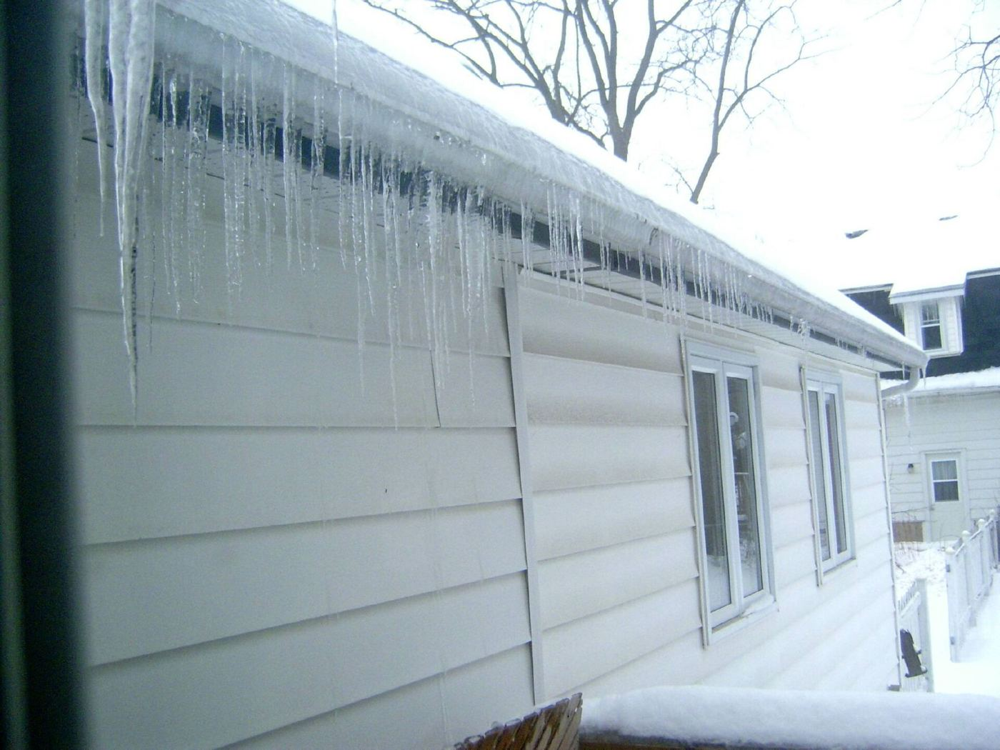
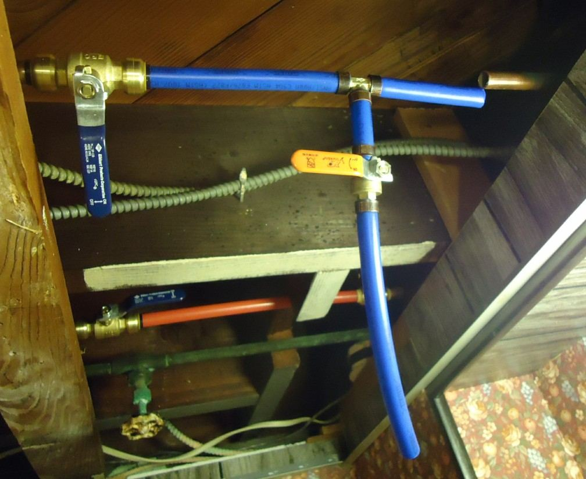

If a pipe is frozen right now
- Open the faucet it feeds so water has somewhere to go once it thaws.
- Warm the pipe slowly with a hair dryer or space heater. Never use a torch or open flame. We've seen that start more than one fire.
- If you can't find the frozen spot, or nothing has changed after 30 minutes, call us.
- If it's split and spraying, shut off the main first. In most houses it's in the basement or crawlspace, on the wall facing the street.
What we do
We thaw frozen lines safely, repair or replace burst sections, and find out why it froze so it doesn't happen again. Usually that means a pipe on an outside wall, a gap in the crawlspace insulation, or an old hose bib that holds water.
The most common fix we do in the fall is putting in frost-free hose bibs. The shutoff sits inside the warm part of the wall, so the water never sits where it can freeze. It's a small job and it prevents a lot of grief.
We don't do sprinkler blowouts. Your irrigation company handles that. But when a backflow valve cracks over the winter, we fix those.


Rough cost
- Thawing a frozen line: $189 to $350
- Burst pipe repair: $250 to $700, depending on where it is
- Frost-free hose bib installed: $240 to $360 each
- Pipe insulation and heat tape in a crawlspace: quoted on site
Before winter, do these four things
- Take the hoses off the outside spigots by Halloween.
- Close the crawlspace vents once it's freezing at night.
- On nights below 10°F, open the cabinet doors under sinks on outside walls and let a faucet drip.
- Know where your main shutoff is before you need it.
Questions we hear a lot
My pipe froze but didn't burst. Am I in the clear?
Probably, but keep an eye on it for a day once it thaws. Sometimes a pipe cracks and doesn't leak until the water is moving again. If you see any dampness, call.
Does homeowners insurance cover burst pipes?
A sudden burst is often covered, though the pipe repair itself sometimes isn't. Check your policy. We'll give you photos and a written invoice for the claim.
I'm leaving town for the winter. What should I do?
Leave the heat at 55°F or higher, shut off the main, and open a faucet on the lowest floor to drain the lines. Or have us come out and winterize the house properly. That's about an hour and we leave you a written checklist for turning it all back on.